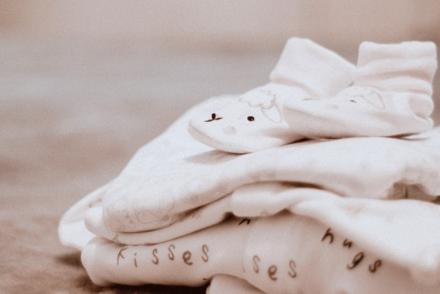

Time is ticking, and the countdown is on! We are officially in our final weeks before welcoming baby #5 to our family. Yes, that’s correct, baby number FIVE. (It wasn’t a typo!) As you already know, we are a blended family, and couldn’t be more ecstatic to add Freddy Sophia to our crew.
We decided to keep the gender of the baby a surprise for the delivery room, so getting ready for his/her grand entrance has been interesting to say the least. In today’s article you will see the top 10 must have items we have on our list in getting ready for our baby.
On the move:Diapers Wipes & Diaper Bag: whether or not this baby is a boy or girl, he/she will need all of these. I’m all for being prepared, but I also don’t see the point in over doing it with a stock pile of diapers especially in the smaller sizes. In my experience, babies don’t stay small long. My oldest was in a new diaper size every month until he was 4 months old, and then stayed in size 4 until he potty-trained. My daughter bumped up two sizes in one month mellowed out on growing and then had another growth spurt. Predicting her needs were a little harder than her brother’s when it came to diapers and sizing. As long as you have a bit of diapers to get you through an unexpected growth-spurt than I say you’ll be just fine. We’re grabbing a small box of newborn diapers, and then a box of size 1 & 2 diapers just to start us off. One box of gentle, unscented quality wipes, a neutral colored diaper backpack that both mom and dad can carry around with pride is what we have in preparing for this baby.
Car Seat & Stroller: These are essential! With my youngest now, Salmon, I didn’t think it was necessary to get a stroller because we drove everywhere anyways. My late father did not agree. He gifted Salmon with a travel system stroller & car seat duo. I thought great, more items to store and take up space! Ha-ha boy was I wrong, that stroller did come in handy! Plus, you can’t really leave the hospital without a car seat anyways… As the baby got older we used the stroller more and more as he wasn’t quite big enough for shopping carts or walking on his own, yet he was too heavy to be lugging around all the time.
Infant Carrier: ok so this is an item that not everyone may agree on being a MUST HAVE for your LO, but I strongly disagree. I have carried all of my babies in a wrap/carrier until they refused them. Your LO has spent the last 9 months inside your comfy womb and is now out in the big open world separated from you physically. I find that each of my LO’s were so much more content being close to me in the carrier and it gave us a little more of a connection than being placed in the stroller/car seat. Plus, they get to hear that familiar sound of your heartbeat when pressed up against your chest and you get to snuggle them hands-free getting what you need to do done. It’s a win-win for everyone!
At Home Clothing: This is where keeping the gender a surprise for D-Day got interesting. In the beginning, I so desperately wanted to find out what we were having so we could shop for gender specific clothing. Ian, my partner did not want to find out whatsoever, and the baby was already deciding to listen to dad more than mom on this one. Ha-ha! When we went for the anatomy scan, baby kept his/her legs crossed making it impossible for the tech to see what gender he/she is. Even from different angles the tech couldn’t see because the baby tucked the umbilical cord in between his/her legs. Anyways, back to prepping clothes for the babe… newborn size: undershirts (x5), sleepers (x5), night gowns the kind with no legs, zippers or snaps (x5), socks, little hand mittens to avoid babes scratching up his/her face, two or three hats to keep warm. For 0-3 we done just a few undershirts, sleepers, night gowns (these are lifesavers for those night time changes guys! Seriously if you haven’t already gotten some for your LO I suggest you find some), socks and a couple gender neutral outfits. As much as I wanted to go crazy and shop excessively, we have only grabbed the essentials in gender neutral tones. If you really want to shop gender specific clothes, I suggest putting some savings aside for a shop once your baby gets past 0-3 month clothing as they spend most of their time in comfy sleepers and pajamas for that time anyways. Plus, friends and family usually come bearing gifts of gender specific goods once the baby is born so your shopping trip may be put off for even longer than expected.
Playpen: Playpen/Pack’n’Play are great especially once the baby gets a little older and harder to keep still while getting chores done around the house. There are fancy playpens that come with a rocking bassinet attachment mobile changing station and diaper storage compartment as well as a higher infant insert… and those can get very pricey! Anywhere close to 200$ give or take a few dollars. As much as I love play pens, I don’t necessarily see the point in purchasing one that has all the fancy attachments with it. Those fancy gizmos attached to the playpen are more than likely only used for a little while with the weight limits on them. I like to stick to the bare minimum, lower part for older babies and the infant insert that raises the sleeping area for infants. Everything else is just not for us and hardly used. The nice thing about these kind of playpens is that it can be used right from birth to toddler age, ensuring we get our money worth without forking out extra on accessories that we don’t use.
Crib & Bedding: I love co-sleeping so the fact that this has made my list is a little surreal to me. As much as I love co-sleeping, sleeping with a tiny new human is something that always scares me a little bit in the beginning and then I end up not sleeping as well as I should. So for the first few months of my LO’s life he/she will be sleeping in his/her big brother’s hand me down crib from their late papa. As for bedding, I have picked up a new crib mattress, cover, sheet and a mesh breathable bumper. Also we love the bigger receiving blankets to swaddle the LO. We do have a gender neutral blanket for the cooler nights.
Swing/Chair: Another life saver! As much as we all love to snuggle the baby the reality of holding him/her every minute of every day just isn’t something that’s possible. We have more than enough hands to do so, but let’s face it, most LO’s get tired of being handled and just need a minute to relax. Investing in a sturdy chair for baby to sit in is worth every cent if you purchase one that has a sturdy frame. Baby will be able to use the seat from newborn to toddler age. We also love swings, we have used standard rocking swings, but plan on using a Mamaroo swing this time around for the baby. This is probably the only purchase I believe in investing in that doesn’t follow the newborn into toddlerhood. Each of my babies all loved their swing, and so did I.
Bathing Essentials: Bathtub, hooded towels, face cloths and gentle scent-free body wash. These are the must haves for bathing baby. Doesn’t have to be anything fancy, but I like to get the kind of tub that has a slanted seat for baby to sit in until he/she is able to sit on their own. Infant tubs are crucial for saving your back and keeping your baby clean! 4th baby of my own and I couldn’t go without having an infant tub to bath at counter height… It’s just so much easier on my back to do so.
Bottles/Formula: I am hoping to exclusively breastfeed, but I still have bottles just in case we need them. In the life of motherhood, especially with multiple children, I have learned that there will be times that I have to be away from some of my kids to tend to one. Its life, sometimes things happen out of our control and the only thing we can do about it is breathe and keep pushing forward dealing with what’s in front of us. I have had the privilege of exclusively BF one of my children, and I had to supplement the other 2 with formula. My thoughts are, as long as baby is fed it doesn’t really matter what you chose to do, as long as you’re prepared you’ll be alright. I wouldn’t go as far as purchasing any formula before the baby gets here. You won’t know what the baby will tolerate until he/she gets here, but it doesn’t hurt to have a little bit of mad money set aside just in case you end up needing it. Some clinics offer samples and talking to your doctor to see which formula is recommended would be the best place to start. As of right now, I plan to exclusively BF, but I am prepared to pump and let dad feed with the bottle if anything comes up where I absolutely need to be away from baby for an extended amount of time. If babe ends up needing formula, that will be something we can be prepared for too by already having some bottles to start with.
Breast-pump/nursing pads: As I have stated previously, I plan to BF, but with this I know I will have to pump. Luckily I have my Madela pump from Salmon’s BF days. There are options of renting from a pharmacy, buying secondhand, or borrowing from friend/family if buying brand new isn’t something you can do right away. I personally bought the pump secondhand dirt cheap, sterilized the pieces and ordered new tubing for my pump back in the day. I lucked out and found my Madela pump for 40$ off a mom’s swap & shop. The pump originally was 200$ so 40$ and only used a handful of times was a steal. Nursing pads! Definitely something you need to invest in if you haven’t already needed them as your due date approaches.
Now I know the post says 10 items, and we have gone over more than that… but I just couldn’t narrow it down any further than this. I am all about saving money when and where I can and a lot of our stuff for the baby has come second hand. Items like our diaper bag, carrier, some clothing, big brother’s old crib, infant chair, and breast pump have all been used previously for this baby. That includes used previously by us for an older sibling. Sure it requires a little bit of elbow grease cleaning and sterilizing everything first, but it all works just as good as new and it saves us money in the end! I hope this list of our essential items for our baby is helpful to you in preparing for your own LO. What must have items made your list that I have missed on mine?